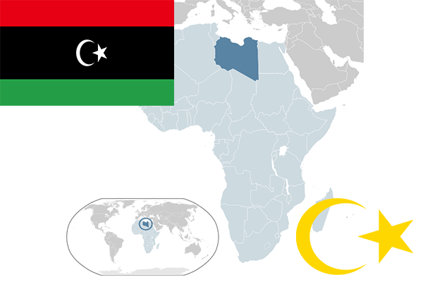

To`liq nomi: Liviya davlati
Region: Shimoliy Afrika
Qonunchilik shakli: Respublika
Mustaqillik kuni: 24-dekabr 1951-yil (Birlashgan Qirollik va Fransiyadan)
Poytaxt: Tripoli
Maydoni: 1 759 541 km² (dunyoda 16 -o`rinda )
Chegaradosh davlatlari: Tunis, Jazoir, Niger, Chad, Sudan, Misr
Aholisi: 6,293,253 (dunyoda 108 - o`rinda, 2016 -yil roʻyxat)
Aholi zichligi: 3,55/km²
Aholining o`rtacha yoshi: 76,9 yil (79,2 ayollar,74,6 erkaklar)
Rasmiy tili: Arab tili
Dini: Musulmon
Pul birligi: Liviya dinori
Telefon prefiksi: +218
Internet domen: .ly
Xalqaro tashkilotlarga a`zoligi: BMT (1955 – yildan), OPEC (Neftni eksport qiluvchi davlatlar tashkiloti) 1962-yil. Arab davlatlar uyushmasi (1953-yildan)
Dengiz va okeanlarga chiqishi: O`rtayer dengizi
YIM: Butun: $ 87.067 mlrd, Jon boshiga $ 13,501 (2017 - yil roʻyxati)
Yirik shaharlari: Tripoli, Bengazi, Misurata